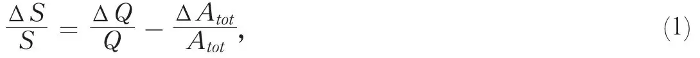
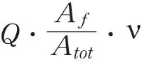
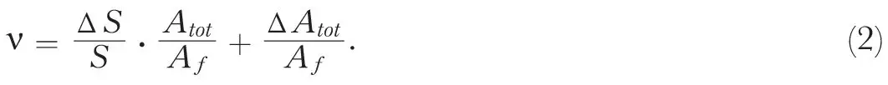
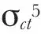
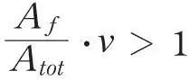
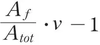

中文
中文H. von Halban, jun. et al.
Editor’s Note
Experiments had confirmed that uranium nuclei could be fissioned—induced to split into two large nuclei—when bombarded by a neutron, and that secondary neutrons were given off in the process. But physicists had little idea how many neutrons were produced in such a fission event. This was important to the possibility of a self-sustaining fission chain-reaction. Here physicist Hans von Halban, then working with Frédéric Joliot-Curie and Lew Kowarski in Paris, estimates experimentally how many neutrons are released. The answer—3.5 on average—suggested that a chain reaction might be possible in uranium if the likelihood for a neutron to trigger a fission event were sufficiently high. After the German invasion in 1940, von Halban fled France for England. 中文
RECENT experiments have shown that neutrons are liberated in the nuclear fission of uranium induced by slow neutron bombardment: secondary neutrons have been observed which show spatial1, energetic2 or temporal3 properties different from those which primary neutrons possess or may acquire. Such observations give no information on the mean number of neutrons produced per nucleus split; this number ν may be very small (less than 1) and the result of the experiment will still be positive. 中文
We are now able to give information on the value of ν. Let us consider the curve representing the density distribution of neutrons slowed down in an aqueous solution surrounding a primary neutron source1; the area S of this curve is proportional to Q·τ, Q being the number of neutrons per second emitted by the source or formed in the solution, and τ the mean time a neutron spends in the solution before being captured. Assuming that the solution contains only nuclei which absorb neutrons according to the 1/υ law (the only exception to this rule will presently be dealt with), τ is proportional to 1/∑ciσi, where ci is the concentration (atom grams per litre) of an absorbing nucleus, σi its cross-section for the capture of neutrons of velocity 1 and the index i is extended to all kinds of neutron-absorbing reactions attributable to nuclei present in the solution. Substituting the symbol Ai for ciσi and Atot for ∑Ai, we have identically:

neglecting all terms of higher orders, such as those containing (ΔQ)2, ΔQ· ΔAtot, etc. 中文
Let the symbol Δ stand for the differences observed between the two solutions (uranyl and ammonium) used in our previous experiment1. Neglecting ΔAtot before Atot introduces an ambiguity in the definition of Atot (uranyl υs. ammonium value) which is numerically unimportant and can be reduced by adopting the arithmetical mean (Atot (amm.) +ΔAtot) /2. 中文
In the quantity ΔAtot the uranium nuclei are represented by several separate terms standing for the different modes of neutron capture (see below); let Aƒ be the term for the capture leading to fission. Every neutron has the probability Aƒ/Atot of causing a fission and, since one individual fission process liberates ν neutrons on the average, the total number ΔQ of neutrons thus created is

, and the equation (1) can be rewritten as follows:
Let us estimate the values of all quantities necessary to calculate ν according to this formula. The area variation ΔS/S can be read from the graph given in our previous letter with an error of less than 20 percent (due to the uncertainties of inter- and extrapolation; in order to facilitate the latter, we added to the curves a further experimental point for r = 29 cm.). The value of Atot for the ammonium solution can be easily calculated from the known concentrations and capture cross-sections (hydrogen, nitrogen and oxygen). Af is equal to cU (1.6 in our experiment), multiplied by the value of σƒ given in a recent paper by Anderson et al.4. ΔAtot contains a term expressing the small difference of the hydrogen content between the two solutions; and three terms relative to uranium, namely, the fission term Af, already dealt with, the thermal capture term Act which can be calculated by using a recently found value for

and finally the resonance capture term Ar which requires some explanation. 中文
Our reasoning assumed that all neutrons introduced into the solution spend practically all their life, and are absorbed, in the thermal state. This is true in so far as the 1/υ law is valid for absorption of neutrons in all nuclei concerned; and, therefore, not wholly true for uranium, which shows a pronounced resonance capture of neutrons of about 25 volts6. A certain proportion of neutrons entering the solution is bound to come within this resonance band and to be absorbed by resonance; therefore, it will never reach the thermal state. This proportion depends on the width of the resonance band and on the concentration cU; its value in our system of symbols is equal to Ar/Atot and was numerically determined by an experiment reported elsewhere5. 中文
Putting all numerical values in the formula (2) (with 10－24 cm.2 as the unit of cross-section), that is: ΔS/S = 0.05 ± 0.01; Atot = 36 ± 3; Af = 1.6 × 2=3.2; ΔAtot = 8.7 ± 1.4 decomposable into ΔAH = 1.2 ± 0.1, Act = 1.6 × (1.3 ± 0.45) = 2.1 ± 0.7, Ar = 6.4 ± 1.1 and Af = 3.2, we find:
ν = 3.5 ± 0.7.
We were not able to allow for an error in Af, since the value of σf given by Anderson et al. contains no indication of probable error. Any error in σf will affect ν – 1 in an inversely proportional way; in any case ν will remain greater than 1. 中文
The interest of the phenomenon discussed here as a means of producing a chain of nuclear reactions was already mentioned in our previous letter. Some further conclusions can now be drawn from the results reported here. Let us imagine a medium containing only uranium and nuclei the total neutron absorption of which, as compared to that of uranium, may be neglected (containing, for example, only some hydrogen for slowing down purposes). In such a medium, if

(Atot includes now only uranium terms), the fission chain will perpetuate itself and break up only after reaching the walls limiting the medium. Our experimental results show that this condition will most probably be satisfied (the quantity
, though positive, will be, however, small), especially if one keeps in view that the term Ar, because of the self-reversal of the resonance absorption line, increases much more slowly than the other uranium terms when the uranium content of the medium is increased. 中文
(143, 680; 1939)
H.von Halban, jun., F. Joliot and L. Kowarski: Laboratoire de Chimie Nucléaire, College de France, Paris, April 7.
References:
1. von Halban, jun., H., Joliot, F., Kowarski, L., Nature, 143, 470 (1939).
2. Dodé, M., von Halban, jun., H., Joliot, F., Kowarski, L., C.R., 208, 995 (1939).
3. Roberts, R., Meyer, R., Wang, P., Phys. Rev., 55, 510 (1939).
4. Anderson, H., Booth, E., Dunning, J., Fermi, E., Glasoe, G., Slack, F., Phys. Rev., 55, 511 (1939).
5. von Halban, jun., H., Kowarski, L., Savitch, P., C.R. (in the Press).
6. Meither, L., Hahn, O., Strassmann, F., Z. Phys., 106, 249 (1937).